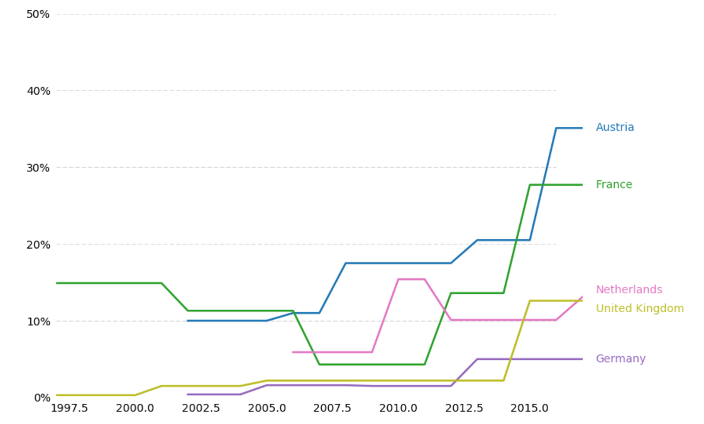
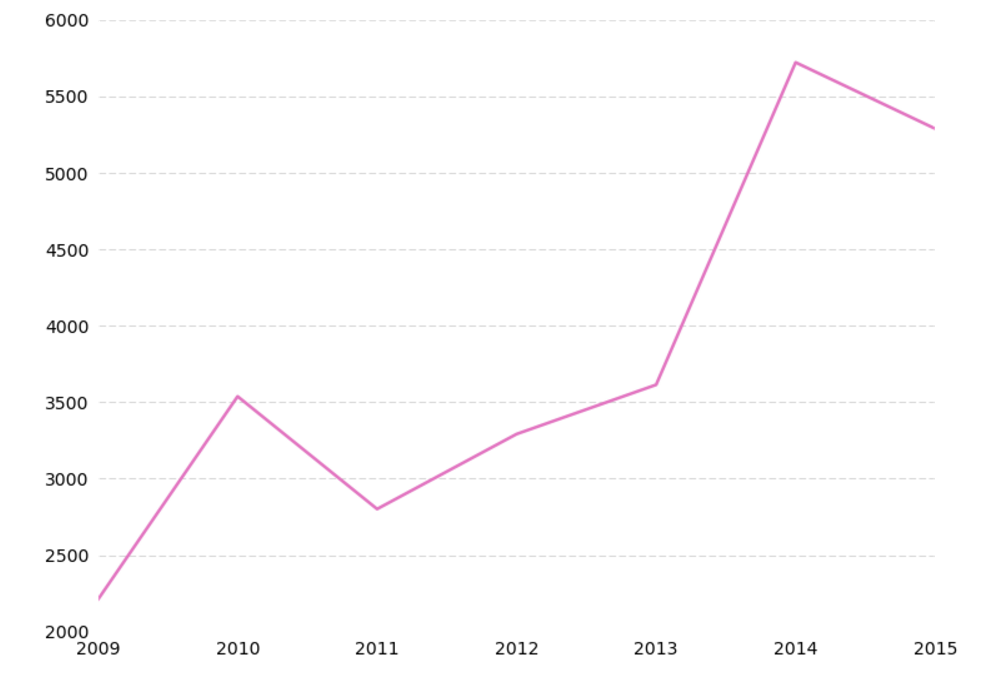

Populism and its Consequences: a Data Visualization
Results of recent EU elections compared to recorded instances of hate crimes
Support for populist parties based on recent European election results

Number of hate crimes recorded in recent years in the Netherlands
